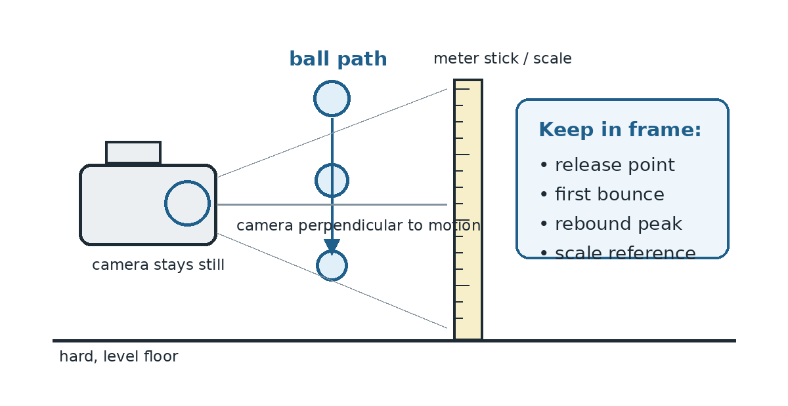

Bouncy Ball Evidence & Models
A scientific investigation of drop height and rebound height
1. Build a Testable Claim
Before collecting data, write a claim that predicts how rebound height will change as drop height changes. Your claim must be specific enough that the data could support it, challenge it, or force you to revise it.
What result would count against your claim? Describe a pattern in the data that would make you revise your explanation.
2. Identify the Measurements
| Role | Quantity | How it will be measured |
|---|---|---|
| Changed on purpose | Drop height (m) | Vertical distance from the floor to the center of the ball at release |
| Measured response | Rebound height (m) | Maximum vertical distance from the floor to the center of the ball after the first bounce |
| Kept as consistent as possible | Same ball, same floor surface, same release method, same camera position and scale reference | |
Write one additional condition your group should keep consistent and explain why it matters.
3. Set Up the Measurement

4. Collect Evidence
Choose 5-6 different drop heights that your setup can measure safely and clearly. Record each drop. Use Vernier Video Analysis (or the class-approved video measurement method) to measure the release height and first rebound height.
| Trial | Drop Height (m) | Rebound Height (m) | Observation / quality note |
|---|---|---|---|
| 1 | |||
| 2 | |||
| 3 | |||
| 4 | |||
| 5 | |||
| 6 |
5. Build a Model in Vernier Graphical Analysis
| Linear model | Rebound height = ______________________________ |
|---|---|
| Fit information | ______________________________________________ |
6. Separate Observation From Inference
A. Write one direct observation or measurement from your investigation.
B. Write one inference you can make from the pattern in your measurements.
7. Test the Model
A. Prediction: Choose a drop height inside the range you tested. Use your model to predict the rebound height. Show how the model produced the prediction.
B. Check: Perform one new drop near that height. Compare the measured rebound height with the model prediction.
| Test drop height | Model prediction | Measured rebound height | Difference |
|---|---|---|---|
Does this new evidence strengthen the model, weaken it, or suggest a revision? Explain.
8. Claim - Evidence - Reasoning
Claim: State the relationship your group now thinks is best supported.
Evidence: Cite at least two specific measurements or features of the graph/model.
Reasoning: Explain why the evidence supports the claim. Distinguish what you measured directly from what you are inferring about the relationship.
9. Revise Like a Physicist
Compare your final claim with your initial claim. What changed, if anything? If nothing changed, identify one limitation or source of uncertainty that keeps your model from being a perfect copy of reality.